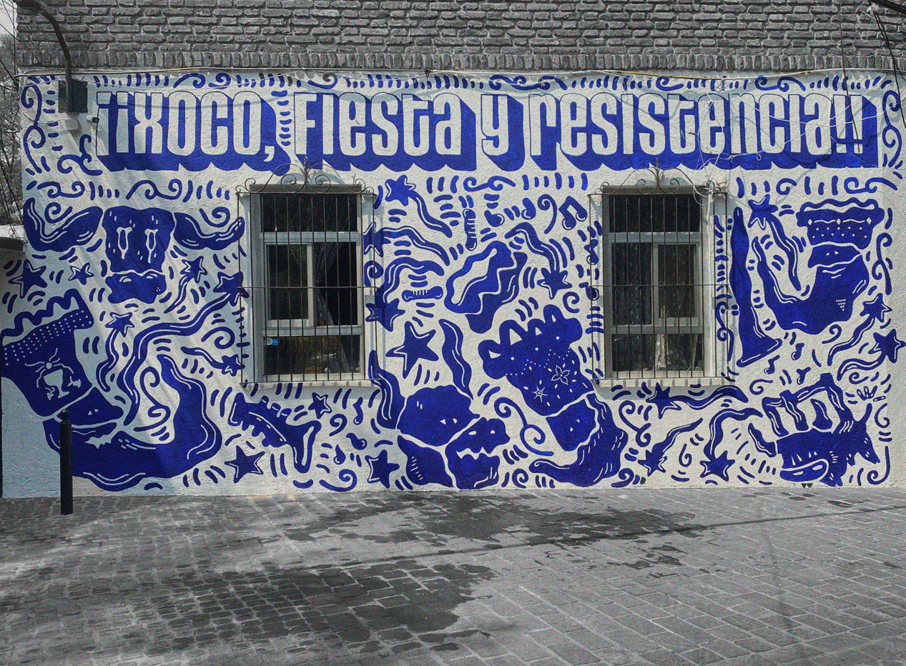
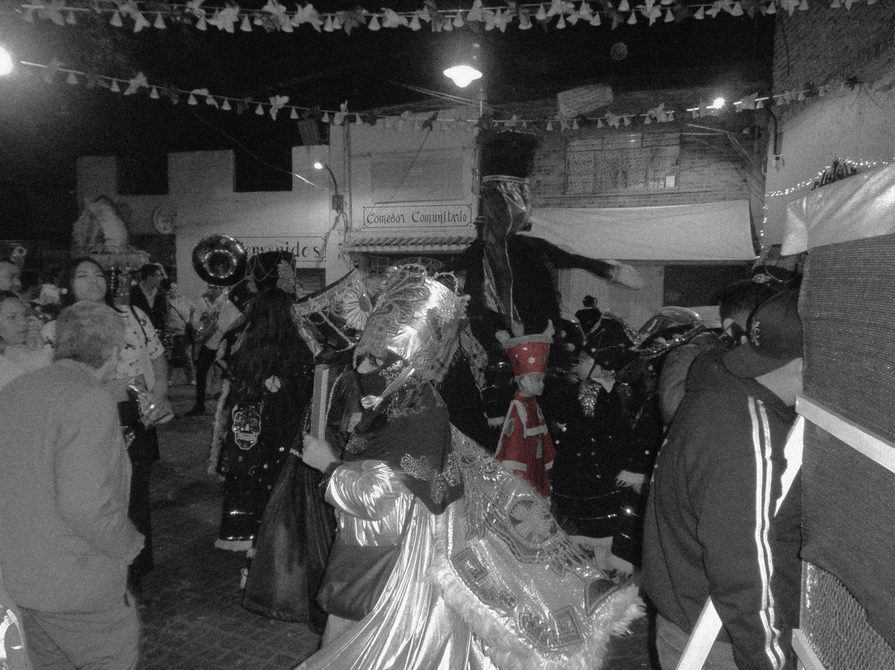

XIPIL es un proyecto que busca integrar las historias, prácticas y símbolos del pueblo de San Sebastián Xoco, proponiendo alternativas que documenten y transformen el papel de los signos culturales en la resistencia, preservacion y revalorización de su identidad y patrimonio cultural.

San Sebastián Xoco es un pueblo originario ubicado en el centro-sur de la alcaldía Benito Juárez, en la Ciudad de México. Su historia se remonta a épocas prehispánicas, con vestigios arqueológicos que indican asentamientos teotihuacanos entre los años 225 y 550 d.C. Durante el periodo colonial, se construyó la capilla de San Sebastián Mártir en 1663, la cual sigue siendo un punto central en la vida comunitaria.
A pesar de la urbanización y el desarrollo de megaproyectos como la Torre Mitikah, la comunidad de Xoco ha mantenido vivas sus tradiciones, celebraciones y estructura social. Sin embargo, enfrenta desafíos significativos debido a la gentrificación y la transformación del paisaje urbano, lo que ha generado tensiones entre los habitantes y los desarrolladores inmobiliarios.
/XOCO.png)